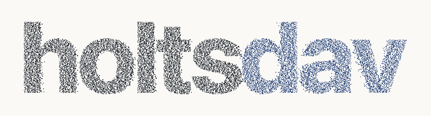
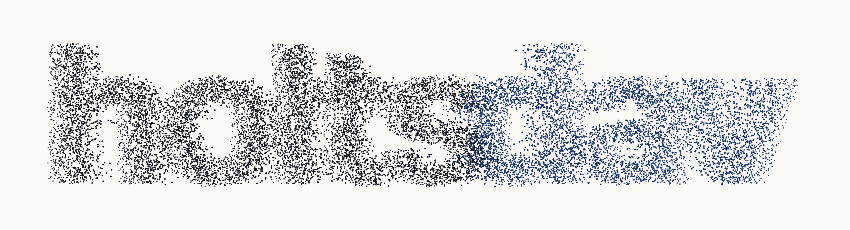
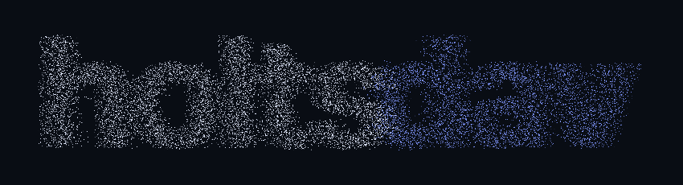
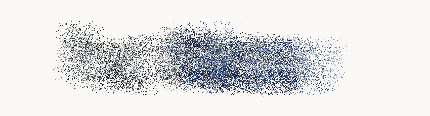
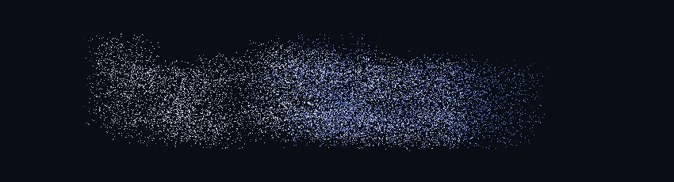
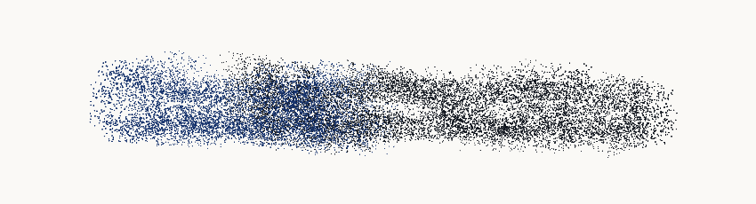
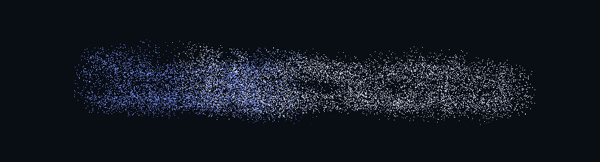
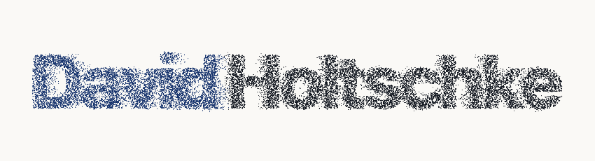
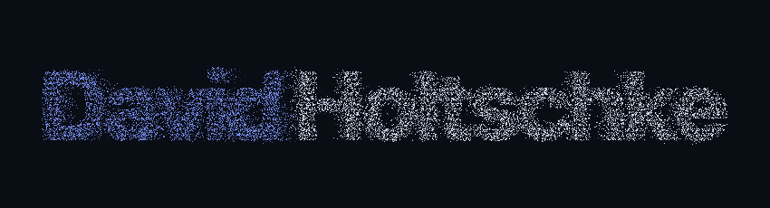
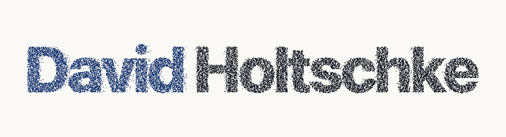

Original particle motion / 1440px / forward
Actual elapsed-time captures. Left: light with contrast changes. Right: unchanged original dark renderer.
light · 401ms
original-dark · 401mslight · 3552msoriginal-dark · 3554mslight · 3802ms
original-dark · 3802ms
light · 4101ms
original-dark · 4102ms
light · 4403ms
original-dark · 4401ms
light · 4702ms
original-dark · 4702ms
light · 5152ms
original-dark · 5152ms